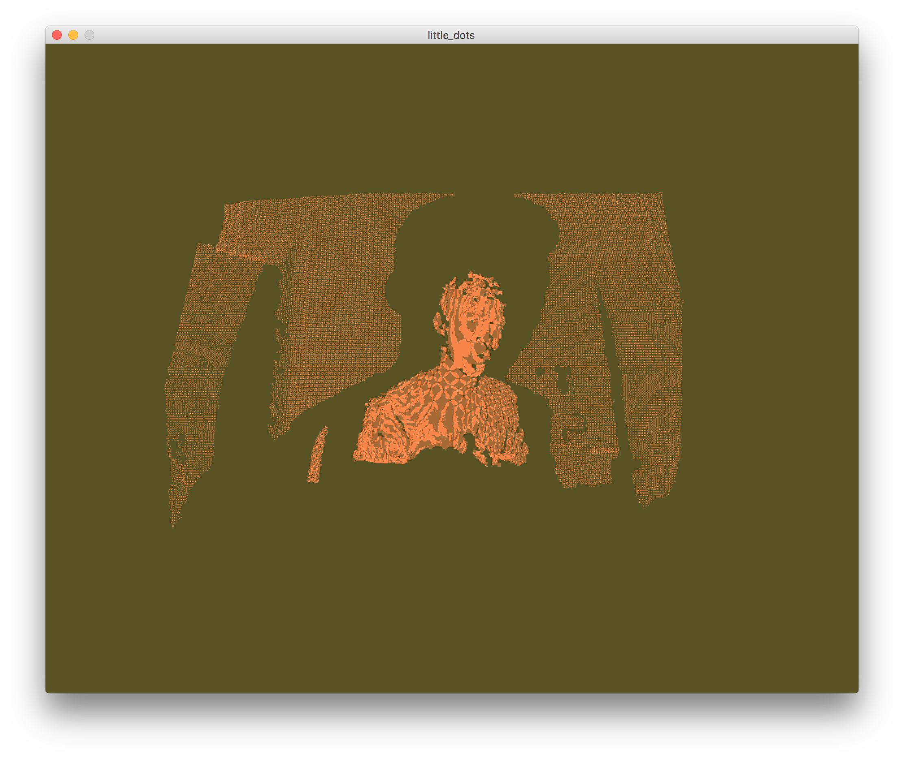
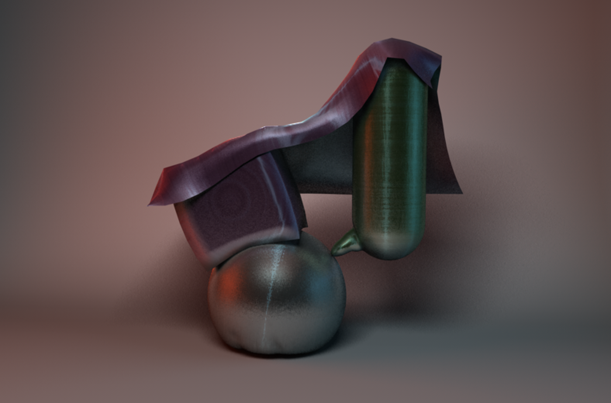
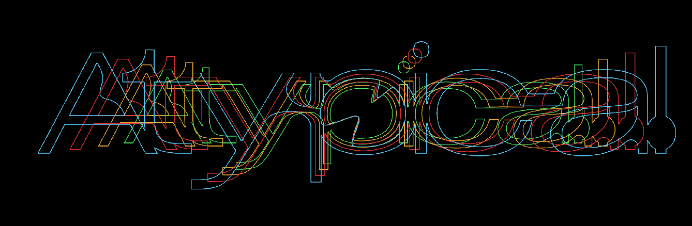

Portfolio

01 Advertisement
The purpose of this assignment was to take an old advert and remake it using modern techniques. I chose an advertisement for a soap product known as Thrill. The initial logo and slogan have been placed on an eye catching graphic, completely changing the tone of the piece.

02 Little Dots
Used Xbox 360 Kinect camera and Processing 3 to map surroundings to dots. Used for live music graphics.

03 Metal Tests
Testing the limits of metal simulation and my GPU.

04 Atypical Logotype
Lettering and design for Atypical Magazine.
05 Brickface Bold
A typeface that feels like a brick in the face